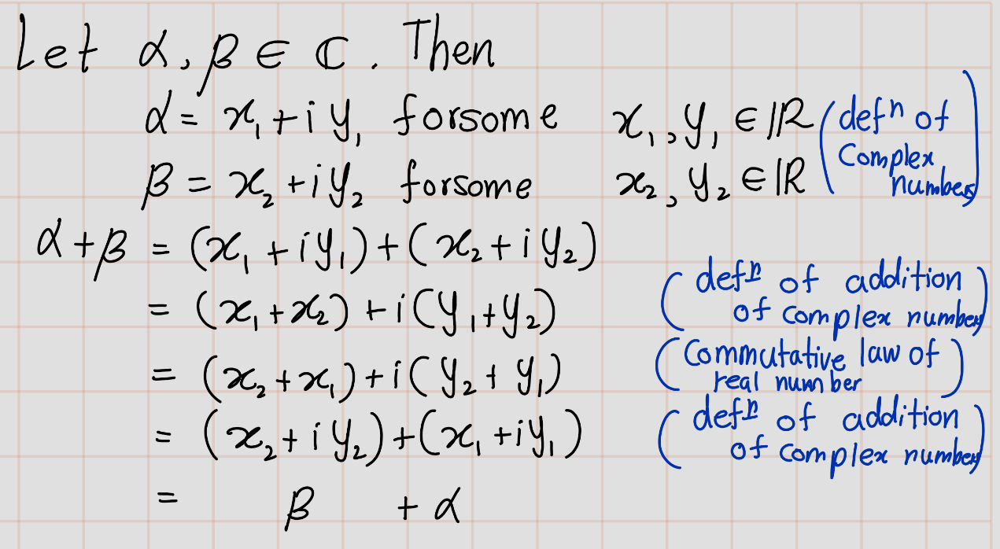

1 Vector space
1.1 a
\(\mathbb{R}^n\) and \(\mathbb{C}^n\) We are already be familiar with basic properties of the set of real numbers(\(\mathbb{R}\)). Complex numbers comes when we can take square roots of negative numbers. The idea is to assume we have a square root of \(−1\), denoted by \(i\) that obeys the usual rules of arithmetic. Here are the formal defnition.
(#def:unnamed-chunk-1) (Complex Numbers )
- A complex number is an ordered pair \((x, y)\), where \(x, y \in \mathbb{R}\), but we will write this as \(x + yi\).
- The set of all complex numbers is denoted by \(\mathbb{C}\): \[\mathbb{C} = \{x + yi \,|\, x, y \in \mathbb{R}\}.\]
- Addition and multiplication on \(\mathbb{C}\) are defined by \[(x + yi) + (u + vi) = (x + u) + (y + v)i,\] \[(x + yi)(u + vi) = (xu - yv) + (xv + yu)i;\] here \(x, y, u, v \in \mathbb{R}\)
Fun Fact: The symbol \(i\) was first used to denote \(\sqrt{-1}\) by Leonard Euler in 1777.
- Note that \(\mathbb{C} \supseteq \mathbb{R}\) because for all real numbers \(a\) \(\mathbb{R}\), we can express it as a complex number by writing it as \(a + 0i\).
- We usually denote \(0 + yi\) simply as \(yi\), and \(0 + 1i\) as \(i\).
- The definition of multiplication for complex numbers is based on the assumption that \(i^2 = -1\). Using the standard arithmetic rules, we can derive the formula for the product of two complex numbers. This formula can then be used to confirm that \(i^2\) indeed equals \(-1\).
(#exm:unnamed-chunk-2) Let’s calculate the product of two complex numbers \((1 + 2i)\) and \((3 + 4i)\) using the distributive and commutative properties:
\[\begin{align*} (1 + 2i)(3 + 4i) &= 1 \cdot (3 + 4i) + (2i)(3 + 4i) \\ &= 1 \cdot 3 + 1 \cdot 4i + 2i \cdot 3 + (2i)(4i) \\ &= 3 + 4i + 6i - 8 \\ &= -5 + 10i \end{align*}\]
(#prp:unnamed-chunk-3) (Properties of Complex Arithmetic)
- Commutativity: \(z_1 + z_2 = z_2 + z_1\) and \(z_1z_2 = z_2z_1\) for all \(z_1, z_2 \in \mathbb{C}\).
- Associativity: \((z_1 + z_2) + z_3 = z_1 + (z_2 + z_3)\) and \((z_1z_2)z_3 = z_1(z_2z_3)\) for all \(z_1, z_2, z_3 \in \mathbb{C}\).
- Identities: \(z + 0 = z\) and \(z1 = z\) for all \(z \in \mathbb{C}\).
- Additive Inverse: For every \(z \in \mathbb{C}\), there exists a unique \(-z \in \mathbb{C}\) such that \(z + (-z) = 0\).
- Multiplicative Inverse: For every \(z \in \mathbb{C}\) with \(z \neq 0\), there exists a unique \(z^{-1} \in \mathbb{C}\) such that \(zz^{-1} = 1\).
- Distributive Property: \(z_1(z_2 + z_3) = z_1z_2 + z_1z_3\) for all \(z_1, z_2, z_3 \in \mathbb{C}\).
The properties above are proved using the familiar properties of real numbers and the definitions of complex addition and multiplication. Here, we are going to prove that commutativity of complex addition and multiplication is proved.
Proof.
Addition : Let \(z_1 = a + bi\) and \(z_2 = c + di\) be any two complex numbers. Then we have:
\[z_1 + z_2 = (a + bi) + (c + di) = (a + c) + (b + d)i = z_2 + z_1\]
This shows that addition is commutative for complex numbers.
Multiplication: Again, let \(z_1 = a + bi\) and \(z_2 = c + di\) be any two complex numbers. Then we have:
\[z_1z_2 = (a + bi)(c + di) = ac + adi + bci - bd = (ac - bd) + (ad + bc)i\] and
\[z_2z_1 = (c + di)(a + bi) = ca + cbi + dai - db = (ca - db) + (da + cb)i\]
As you can see, \((ac - bd) + (ad + bc)i = (ca - db) + (da + cb)i\), which shows that multiplication is also commutative for complex numbers.
So, we have proved that both addition and multiplication are commutative operations in the set of complex numbers. This means that the order in which complex numbers are added or multiplied does not affect the result.
(#def:unnamed-chunk-5) (Subtraction,Division) Let’s suppose \(z_1, z_2 \in \mathbb{C}\).
- The negative of a complex number \(z_1\) is denoted as \(-z_1\). It is the unique complex number such that \[z_1 + (-z_1) = 0.\]
- Subtraction in the set of complex numbers is defined as \[z_1 - z_2 = z_1 + (-z_2).\]
- For \(z_1 \neq 0\), let \(1/z_1\) denote the multiplicative inverse of \(z_1\). Thus, \(1/z_1\) is the unique complex number such that \[z_1(1/z_1) = 1.\]
- For \(z_1 \neq 0\), division by \(z_1\) is defined as \[z_2/z_1 = z_2(1/z_1).\]
So that we can conveniently make definitions and prove theorems that apply to both real and complex numbers, we adopt the following notation.
Notation :Throughout this note stands \(\mathbb{F}\) for either \(\mathbb{R}\) or \(\mathbb{F}\). The letter \(\mathbb{F}\) is used because \(\mathbb{R}\) and \(\mathbb{C}\) are examples of what are called fields.
Elements of \(\mathbb{F}\) are called scalars. The word “scalar” (which is just a fancy word for “number”) is often used when we want to emphasize that an object is a number, as opposed to a vector (vectors will be defined soon).
For $ and \(m\) a positive integer, we define \(\alpha^m\) to denote the product of \(\alpha\) with itself \(m\) times: \[\alpha^m=\underbrace{\alpha\cdot \alpha \cdots \alpha}_{ m \text{times}}\]. This definition implies that \[(\alpha^m)^n=\alpha^{mn}\quad \text {and} \quad(\alpha\beta)^m=\alpha^m\beta^m\] for all \(\alpha\beta\in \mathbb{F}\) and all positive integers \(m,n\).
1.1.1 Lists
Before defining \(\mathbb{R}^n\) and \(\mathbb{C}^n\), we look at two important examples.
(#exm:unnamed-chunk-6)
- The set \(\mathbb{R}^2\) , which you can think of as a plane, is the set of all ordered pairs of real numbers: \[\mathbb{R}^2:=\{(x,y):x,y\in \mathbb{R}\}\]
- The set \(\mathbb{R}^3\), which you can think of as ordinary space, is the set of all ordered triples of real numbers: \[\mathbb{R}^3:=\{(x,y,z):x,y,z\in \mathbb{R}\}\]
Let’s generalize this examples to higher dimensions.
(#def:unnamed-chunk-7) (List,Length)
- Suppose \(n\) is a nonnegative integer. A list of length \(n\) is an ordered collection of \(n\) elements (which might be numbers, other lists, or more abstract objects).
- Two lists are equal if and only if they have the same length and the same elements in the same order
Note that many mathematicians call a list of length \(n\) an \(n\)-tuple.
Lists are often written as elements separated by commas and surrounded by parentheses. Thus a list of length two is an ordered pair that might be written as \((a,b)\). A list of length three is an ordered triple that might be written as \((x,y,z)\) A list of length \(n\) might look like this: \((z_1,...,z_n)\)
Sometimes we will use the word list without specifying its length. Remember, however, that by definition each list has a finite length that is a non-negative integer. Thus an object that looks like \((x_1, x_2, ... )\), which might be said to have infinite length, is not a list.
A list of length 0 looks like this: \((~)\).
We consider such an object to be a list so that some of our theorems will not have trivial exceptions.
Lists differ from sets in two ways: in lists, order matters and repetitions have meaning; in sets, order and repetitions are irrelevant.
(#prp:unnamed-chunk-8) (Lists versus Sets)
- The lists \((3, 5)\) and \((5, 3)\) are not equal, but the sets \(\{3, 5\}\) and \(\{5, 3\}\) are equal.
- The lists \((4, 4)\) and \((4, 4, 4)\) are not equal (they do not have the same length), although the sets \(\{4, 4\}\) and \(\{4, 4, 4\}\) both equal the set \(\{4\}\).
1.1.2 Fn
\(\mathbb{F}^n\) Fix a positive integer \(\mathbb{F}^n\) for the rest of this chapter.
(#def:unnamed-chunk-9) \(\mathbb{F}^n\) is the set of all lists of length \(n\) of elements of \(\mathcal{F}\): \[\mathbb{F}^n = \{(x_1, \ldots, x_n) \mid x_i \in \mathbb{F} \text{ for } i = 1, \ldots, n\}.\] For \((x_1, \ldots, x_n) \in \mathbb{F}^n\) and \(i \in \{1, \ldots, n\}\), we say that \(x_i\) is the \(i\)th coordinate of \((x_1, \ldots, x_n)\).
If \(\mathbb{F}=\mathbb{R}\) and \(n\) equals \(2\) or \(3\), then the definition above of \(\mathbb{F}^n\) agrees with our previous notions of \(\mathbb{R}^2\) and \(\mathbb{R}^3\).
(#exm:unnamed-chunk-10) Let \(\mathbb{C}^4\) be the set of all lists of four complex numbers: \[\mathbb{C}^4 = \{(z_1, z_2, z_3, z_4) \mid z_1, z_2, z_3, z_4 \in \mathbb{C}\}.\]
If \(n \geq 4\), we cannot visualize \(\mathbb{R}^n\) as a physical object. Similarly, \(\mathbb{C}^1\) can be thought of as a plane, but for \(n \geq 2\), the human brain cannot provide a full image of \(\mathbb{R}^n\). However, even if \(n\) is large, we can perform algebraic manipulations in \(\mathbb{C}^n\) as easily as in \(\mathbb{R}^2\) or \(\mathbb{R}^3\). For example, addition in \(\mathbb{R}^n\) is defined as follows.
(#def:unnamed-chunk-11) (addition of higer dimesionans) Addition in \(\mathbb{F}^n\) is defined by adding corresponding coordinates:\[ (a_1, …, a_n) + (b_1, …, b_n) = (a_1 + b_1, …, a_n + b_n) \]
Often the mathematics of \(\mathbb{R}^n\) becomes cleaner if we use a single letter to denote a list of \(n\) numbers, without explicitly writing the coordinates. For example, the next result is stated with \(x\) and \(y\) in \(\mathbb{R}^n\) even though the proof requires the more cumbersome notation of \((x_1, \ldots, x_n)\) and \((y_1, \ldots, y_n)\).
(#prp:unnamed-chunk-12) If \(a, b \in \mathbb{F}^n\), then \(a+b=b+a\).
Proof. Suppose \(a = (a_1, …, a_n) \in \mathbb{F}^n\) and \(b = (b_1, …, b_n) \in \mathbb{F}^n\). Then
\[\begin{eqnarray} a+b &=& (a_1,…,a_n) + (b_1,…,b_n)\\ &=& (a_1 + b_1, …, a_n + b_n)\\ &=& (b_1 + a_1, …, b_n + a_n)\\ &=& (b_1,…,b_n) + (a_1,…,a_n)\\ &=& b+a \end{eqnarray}\]
where the second and fourth equalities above hold because of the definition of addition in \(\mathbb{F}^n\) and the third equality holds because of the usual commutativity of addition in \(\mathbb{F}\).
2 Exercise 1A
- Show that \(\alpha + \beta = \beta + \alpha\) for all \(\alpha, \beta \in \mathbb{C}\).

- Show that \((\alpha + \beta) + \lambda = \alpha + (\beta + \lambda)\) for all \(\alpha, \beta, \lambda \in \mathbb{C}\).

Show that \((\alpha \beta)\lambda = \alpha(\beta \lambda)\) for all \(\alpha, \beta, \lambda \in \mathbb{C}\).
Show that \(\lambda(\alpha + \beta) = \lambda\alpha + \lambda\beta\) for all \(\lambda, \alpha, \beta \in \mathbb{C}\).
Show that for every \(\alpha \in \mathbb{C}\), there exists a unique \(\beta \in \mathbb{C}\) such that \(\alpha + \beta = 0\).
Show that for every \(\alpha \in \mathbb{C}\) with \(\alpha \neq 0\), there exists a unique \(\beta \in \mathbb{C}\) such that \(\alpha\beta = 1\).
Show that \(\frac{-1 + \sqrt{3}i}{2}\) is a cube root of 1 (meaning that its cube equals 1).
Find two distinct square roots of \(i\).
Find \(x \in \mathbb{R}^4\) such that \((4, -3, 1, 7) + 2x = (5, 9, -6, 8)\).
Explain why there does not exist \(\lambda \in \mathbb{C}\) such that \(\lambda(2 - 3i, 5 + 4i, -6 + 7i) = (12 - 5i, 7 + 22i, -32 - 9i)\).